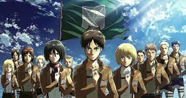
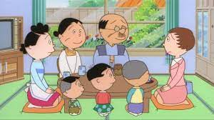
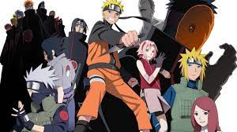
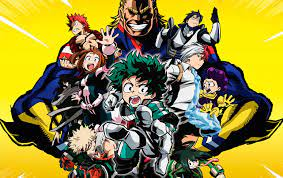
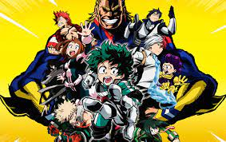

Animes
Os animes mais assistido no:
| Japão | Brasil |
|---|---|
| 1º lugar – Sazae-san | 1º lugar –Naruto Shippuden |
| 2º lugar –Detective Conan | 2º lugar –Shingeki no Kyojin (Ataque dos Titãs) |
| 3º lugar –Chibi Maruko-chan | 3º lugar –Black Clover |
| 4º lugar –Yashahime: Princess Half-Demon | 4º lugar –Dragon Ball Super |
| 5º lugar –One Piece | 5º lugar –Boruto – Naruto Next Generation |
| 6º lugar –Doraemon | 6º lugar –One Piece |
| 7º lugar –Oshiri Tantei | 7º lugar –My Hero Academia |
| 8º lugar –George, o Curioso | 8º lugar –JoJo’s Bizarre Adventure |
| 9º lugar –Crayon Shin-chan | 9º lugar –Mob Psycho 100 |
| 10º lugar –Healin’ Good PreCure | 10º lugar –Naruto Clássico |
Falaremos agora sobre alguns animes
Naruto Shippuden: Começa quando Naruto Uzumaki e Jiraiya finalmente retornam à Aldeia da Folha após três anos. Neste meio tempo, a maioria dos amigos de Naruto se tornaram Chunins, e Gaara foi promovido à Kazekage.
É durante a primeira temporada que somos introduzidos ao verdadeiro perigo que a Akatsuki representa. Gaara acaba sendo capturado por dois membros da organização, e cabe a Naruto, Sakura e Kakashi resgatá-lo.
Ataque dos Titãs: O anime começa nos apresentando Eren Jaeger, Mikasa Ackermann e Armin Arlelt, as três principais figuras do anime. Durante esses primeiros episódios vemos a vida pacata dessas pobres crianças. Porém tudo muda quando descobrimos que as muralhas que rodeiam a cidade separam os humanos dos Titãs.
Black Clover: A história acompanha os dois garotos que competem entre si para se tornar o Rei Mago, o cavaleiro mágico mais forte do reino de Clover. Mas como Asta pode se tornar um cavaleiro mágico se ele não possui magia? A sua jornada começa quando Asta obtém o misterioso poder "anti-magia", que pode anular qualquer magia. Assim Asta, com sua anti-magia e força física, e Yuno, com seus poderes mágicos e talento, começam a sua jornada.
Dragon Ball Super: É um novo arco de anime e mangá da franquia criada pelo lendário Akira Toriyama. A trama tanto do anime como do mangá é uma sequência de Dragon Ball Z, oferecendo assim aos fãs uma continuação da história de Goku e amigos passados quase 18 anos das últimas aventuras.
Boruto: Naruto Next Generations é a sequência direta de Naruto Shippuden, tanto no anime quanto no mangá. Nesta nova história, acompanhamos Boruto, filho de Naruto. Juntamente com seus colegas de Time 7, eles vivem novas aventuras e interagem com antigos e novos personagens da franquia.
Sazae-san: É um uma série de mangá e anime criada por Machiko Hasegawa. Foi publicado pela primeira vez no jornal local da Hasegawa, o Fukunichi Shinbun, em 22 de Abril de 1946. É considerada atualmente a animação mais longa em produção, o anime é exibido desde 1969 e continua até hoje, contando com aproximadamente com mais de 7330 episódios e por isso detém o Recorde Mundial do Guinness.
Detective Conan: É a história de Shinichi Kudo, um jovem detetive prodígio, que por um acaso investigava um ato suspeito de dois homens vestidos de preto quando foi atingido pelas costas e, sem defesa, foi feito de cobaia ao experimentar uma droga que supostamente era para mata-lo sem deixar vestígios.
Chibi Maruko-chan: é uma série de mangá shōjo escrita e ilustrada por Momoko Sakura. A série descreve a vida cotidiana simples de Momoko Sakura, uma jovem que todos chamam de Maruko, e sua família no Japão suburbano no ano de 1974.
Yashahime: Princess Half-Demon: Conta a história das filhas de Sesshomaru e Inuyasha em uma jornada através do tempo. No Japão feudal, um incêndio florestal separa as gêmeas meio-youkai Towa e Setsuna.
One Piece: Segue a história de um grupo de piratas liderado por Monkey D. Luffy. O garoto, que possui um corpo elástico, pretende se tornar o Rei dos Piratas e para isso deve encontrar o One pPiece, tesouro misterioso capaz de torná-lo imbatível, segundo as lendas
   

Clique aqui voltar ao inicio